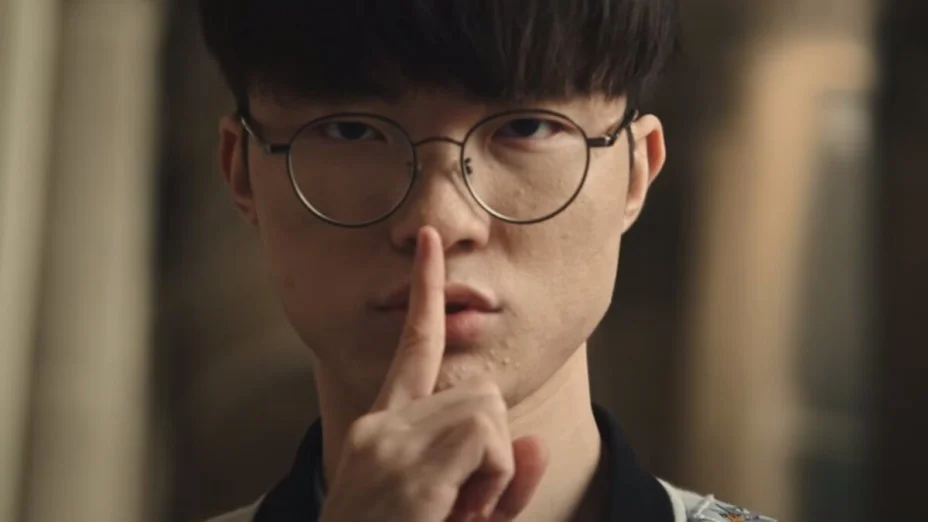
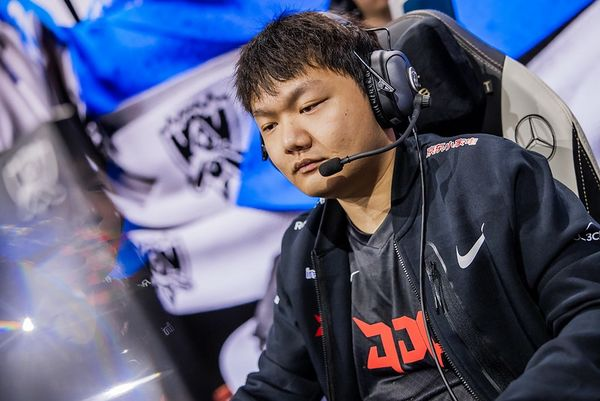
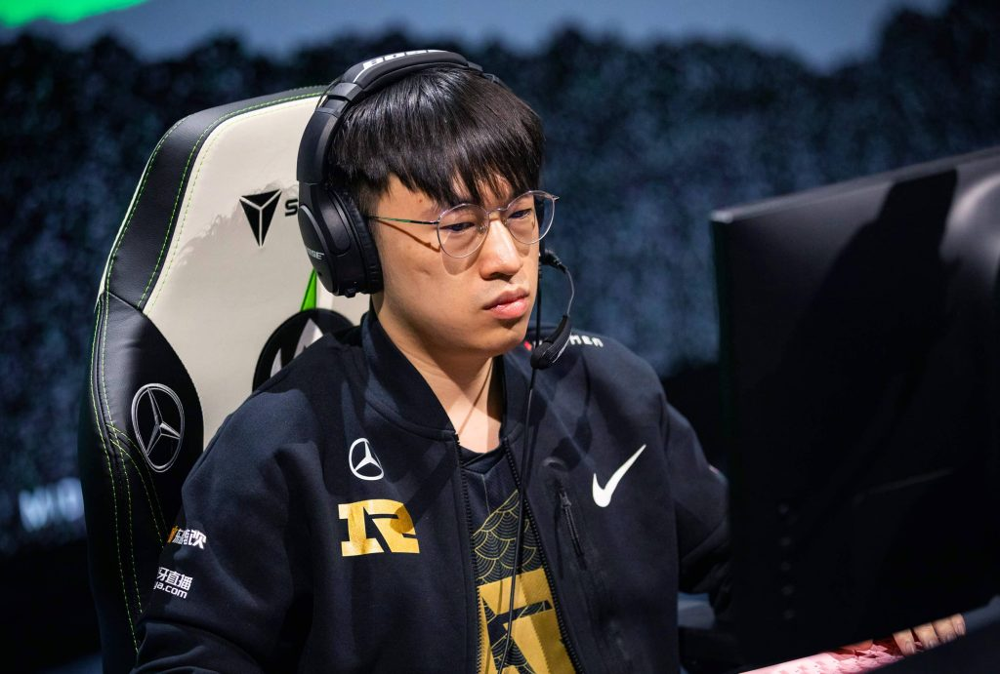
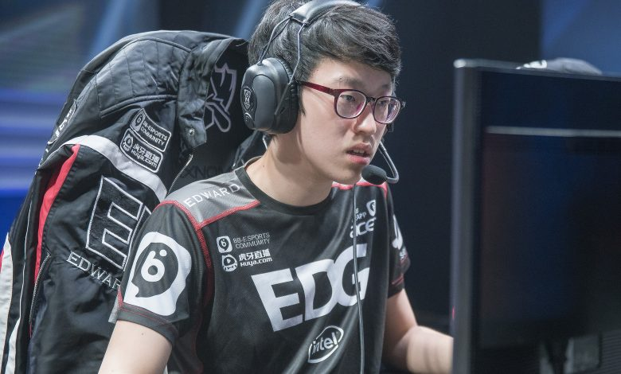
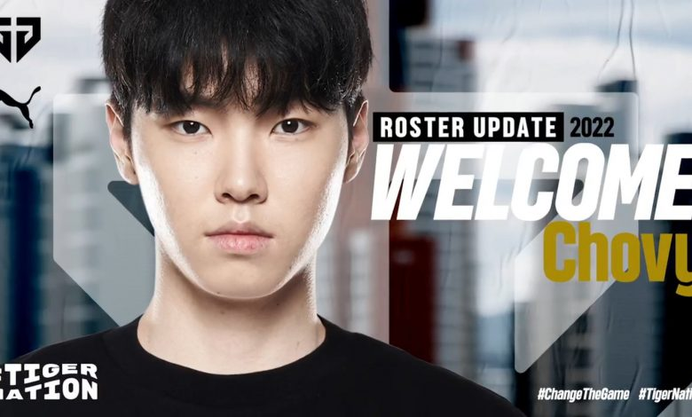

Es extraño ver a Faker en una lista en cualquier lugar en primer lugar, pero Worlds 2022 tiene uno de los mejores grupos de mid lane en mucho tiempo.
Faker ha sido el único factor consistente en T1. Como los jugadores cambiaban a su alrededor, siempre se ha mantenido. Este año, T1 puso a cuatro novatos talentosos junto con Faker y creó uno de los equipos más dominantes que jamás haya visto la LCK. Llegaron a los playoffs y dominaron a toda la oposición en el Spring Split. T1 volvió una vez más a las finales de LCK Summer Split. Desafortunadamente, no pudieron conquistar a sus mayores rivales, Gen.G.
A pesar de su derrota en la final, Faker pudo mantenerse al día con Jeong "Chovy" Ji-hoon, quien, según la mayoría de los analistas, es el mejor midlaner del mundo. A través de sus años de experiencia, Faker puede jugar casi cualquier cosa en el midlane. Ya sea que se trate de escaramuzadores activos al principio del juego como Taliyah, Ahri y Galio, o incluso magos de control como Lissandra, Faker juega casi cualquier cosa en los niveles más altos. Tendrá la oportunidad de demostrar su valía nuevamente en el Campeonato Mundial de este año.

Para cualquiera que no haya seguido la League Pro League este año, Yagao es un nombre que probablemente no esperaba estar en esta lista, o tal vez nunca antes había oído hablar de él.
Como miembro de JDG durante los últimos cinco años, Yagao ha sido un buen mid laner inicial y estuvo en el equipo que permitió que JDG se destacara en 2020 cuando se clasificaron para Worlds 2022 antes de ser eliminados en cuartos de final por Suning. En ese momento, Yagao era solo un personaje secundario de “Kanavi”. Pero este año, Yagao parecía el personaje principal.
En el split de verano de la LPL de 2022, Yagao no llegó a formar parte de uno de los tres equipos All-Pro de la LPL, pero se ubicó silenciosamente entre los tres primeros entre los mid-laners en KDA según Oracleselixer.com. Pero lo que no estuvo tranquilo fue su actuación en los playoffs de verano de la LPL 2022. En pocas palabras, cuando su equipo más lo necesitaba, apareció Yagao.
JDG y Top Esports jugaron en las finales del grupo superior y en la gran final. Ambos partidos fueron al Juego 5, ambos tuvieron a JDG en la cima y ambos MVP del Juego 5 fueron a Yagao. En la gran final, el MVP de la serie también fue para él.
En el transcurso de los playoffs de verano de la LPL de 2022, Yagao ha demostrado ser increíblemente eficiente y, sin duda, está jugando el mejor League of Legends de su carrera en el mejor equipo de la LPL.

El Emperador Tigre que hace esta lista no debería ser una sorpresa.
Empatado primero en la clasificación de MVP de la temporada regular y elegido para estar en el primer equipo All Pro, Li "Xiaohu" Yuan-Hao tuvo una actuación de verano muy sólida a pesar de que la LPL estaba llena de mid laners monstruosamente hábiles como Scout, Yagao, Song "Novato" Eui-jin y Zhuo "caballero" Ding. Con tres títulos de Mid-Season Invitational en su haber, muchos se preguntaban ahora si RNG finalmente podría allanar el camino dorado hacia Worlds una vez más.
Como sabemos la historia por ahora, eso no iba a ser. Xiaohu tuvo una carrera de playoffs mucho más tranquila en comparación, ya que RNG casi se pierde la clasificación para el Mundial, llevándolo al juego final y la serie final para asegurar su lugar en México para los Play-ins.
Sea como fuere, Xiaohu sigue siendo un jugador de primer nivel y un mid laner. Con el tiempo libre y el mono de los mundos perdidos, RNG puede usar este tiempo para mejorar su juego y reevaluar sus prioridades. Ha demostrado varias veces que puede adaptarse a casi cualquier meta que se le presente y este Mundial no debería ser diferente.

El actual campeón mundial mid-laner está haciendo su segundo viaje consecutivo a Worlds y ocupa el segundo lugar en nuestra clasificación Top 5 mid-laner.
Scout ha sido él mismo en el transcurso de la campaña 2022, lo que significa que siempre ha sido élite. En el concurrido grupo de mid-lane en la LPL, Scout no ha brillado más que sus compañeros mientras olfateaba la selección All-LPL para sus equipos profesionales de verano. Pero eso no le ha impedido seguirles el ritmo. Según Oracleselixer.com, Scout se ubicó entre los cinco primeros de todos los medios en prácticamente todas las estadísticas.
EDG tuvo una mala temporada regular de verano según sus propios estándares, pero cobró vida en los playoffs y también Scout. En los playoffs, Scout superó a Xiaohu dos veces, Kim "Doinb" Tae-sang una vez y se enfrentó cara a cara con Zhuo "caballero" Ding.
Tal como vimos en Worlds 2021, no hay un mid-laner que Scout no pueda vencer cuando está en forma. Y al ingresar a Worlds 2022, está muy cerca de su punto máximo.

Desde su debut, Chovy tuvo mucha competencia como Son "ucal" Woo-hyeon y Heo "ShowMaker" Su. Cuatro años después de su temporada de novato, Chovy ha superado a su competencia gracias a su consistencia. No se ha perdido un solo Mundial a lo largo de su carrera y parece mejorar a medida que pasan los años.
La fase de carriles de Chovy continúa entregando con él aplastando a sus oponentes en enfrentamientos que se consideran parejos o desventajosos para el mid laner Gen G. Con el grupo de campeones de mid lane viendo poco o ningún cambio, es difícil imaginar un escenario en el que Chovy no haga lo que hizo durante toda la división de primavera en Worlds 2022: dominar.
